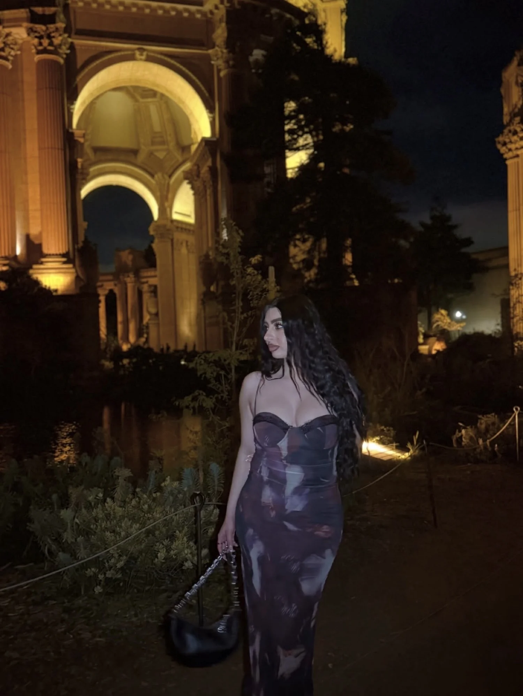

About
Meet Maria
Model · Actress · Creative Director — San Francisco

“Polished, aesthetic stories that feel like an evening out.”
Maria Marron is a model, actress and creative director based in San Francisco. She directs and stars in her own content, turning hotel stays, dining nights and city landmarks into polished, aesthetic stories that feel like an evening out.
Her world is after-dark San Francisco: warm light on marble, a table set for the night, a look built for the room. She has modeled for hospitality brands and brings that on-camera discipline to every feature — composed, cinematic, unmistakably glam.
Her approach
One vision, start to finish
- 01
Concept
Every feature starts with a mood and a story beat — what the evening feels like, not just what it looks like.
- 02
Styling & location
Looks are chosen for the space. “One piece, three ways” shows range from a single hero garment.
- 03
On camera
Model and actress in frame — natural, composed performance that sells the experience.
- 04
Story & voice
15–30s storytime and voiceover cuts that hold attention and give your brand a narrator.
Based in
San Francisco & the Bay
Partnering with hotels, restaurants and houses of style across San Francisco and the Bay Area. Travel commissions by arrangement.
Let’s Create